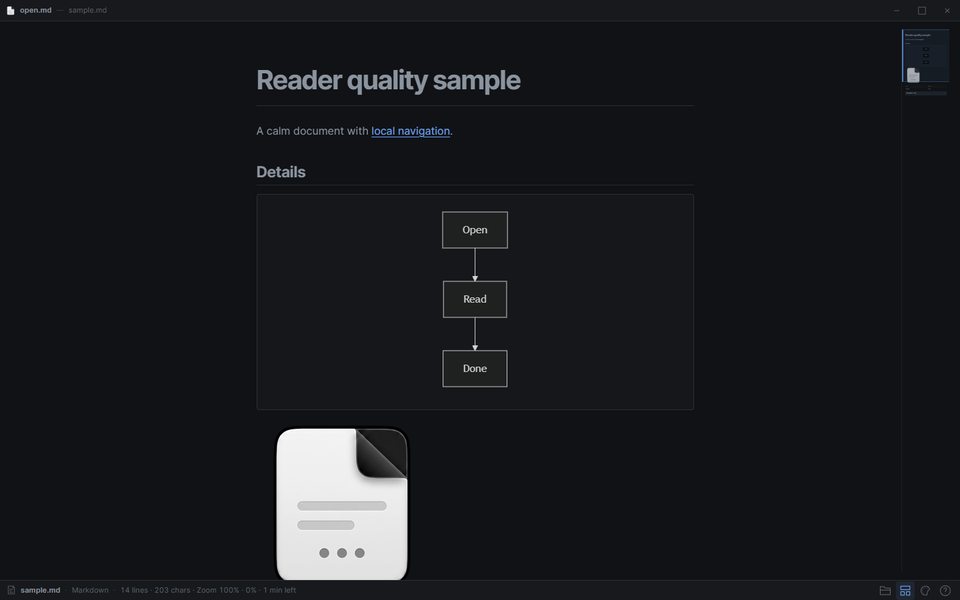
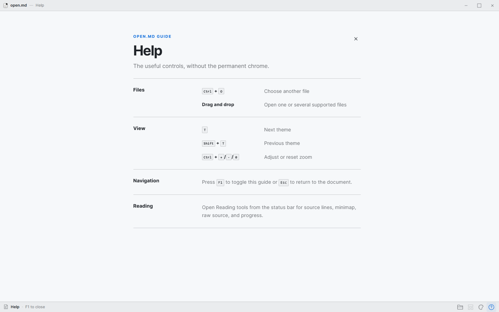
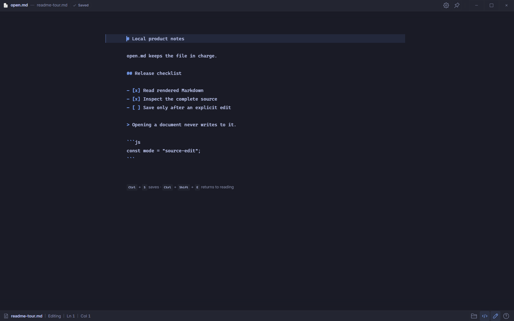
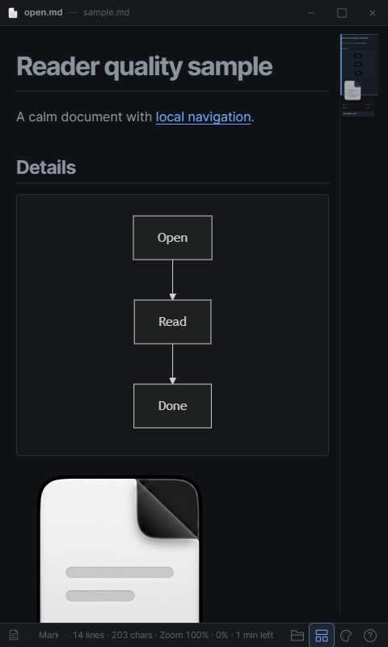

Local Markdown reader · 0.1.0
Read the file.
Keep the file.
open.md turns local Markdown and plain-text files into a focused desktop reading view with optional in-place editing. It never fetches remote images. Opening a file is read-only until you choose Edit and save.

01 Markdown, code, Mermaid and local images
02 Rendered or Source, in Read only or Edit
03 File picker, drag and drop, and Open with
The actual interface
The document stays in charge.
Controls stay at the edges until they are needed. The same reading structure holds in a narrow window.



Motion study · Grok Imagine
Six seconds from the captures.
This generated study uses the original Read, Help, and Resize captures above as references. It is an illustrative composition, not a screen recording; use the stills for interface details.
Video playback is unavailable. The real interface captures remain available above. Download the MP4.
How it works
Open, read, edit.
- 01
Open a local file.
Choose it, drop it into the window, or use the operating system’s Open with flow.
- 02
Read the rendered document.
Markdown, highlighted code, Mermaid diagrams, and bounded local images share one reading surface.
- 03
Edit when you need to.
Use Rendered Edit for live preview or Source Edit for the complete file. Themes, zoom, and the minimap stay available.
No installer yet
Run open.md from source.
Hosted installers are not published yet. The current milestone is for contributors and early testers; install Rust, Node.js, pnpm, and the Tauri platform prerequisites first.
$ pnpm install
$ pnpm run tauri dev